Префектура Вакаяма · Кумано · паломничество
Кумано-кодо: тропа «земли возрождения» и пять святынь паломничества Кумано
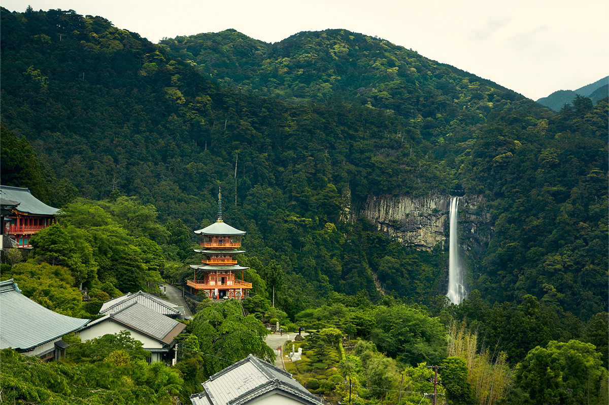
С эпохи Хэйан люди шли в Кумано, на юг полуострова Кии, чтобы вернуться оттуда обновлёнными. Мы прошли часть старой тропы и обошли пять святынь, которые паломники посещали по очереди.
Наследие
Горы, где живут боги
Горы полуострова Кии с мифических времён считались землёй, где пребывают боги. Здесь, на территории нынешних префектур Вакаяма, Нара и Миэ, сложились основы японской духовной культуры. Синтоизм вырос из почитания природы, из Китая пришёл эзотерический буддизм школы Сингон, а из смешения этих учений с даосизмом и другими верованиями родилось сюгэндо, японское горное подвижничество.
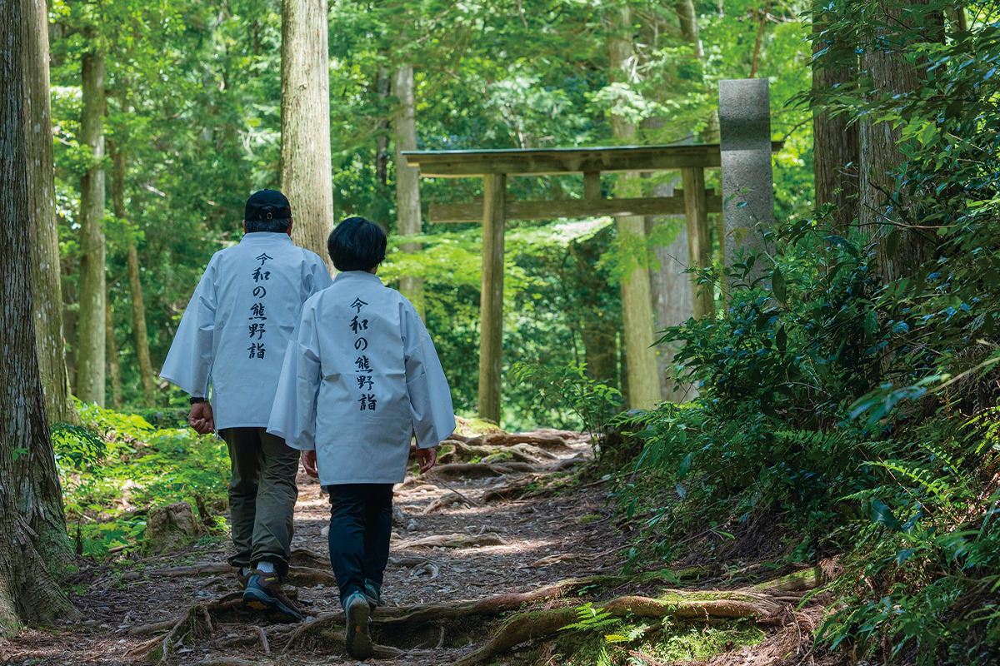
Так появились три священных места: Ёсино и Оминэ, гора Коя и Кумано. Разные религии здесь не вытесняли друг друга, а уживались рядом, и все три места связаны паломническими тропами, «дорогами молитвы». Такое сочетание редко встречается в мире, и в 2004 году «Священные места и паломнические маршруты в горах Кии» внесли в список Всемирного наследия ЮНЕСКО.
Среди них Кумано, край нагромождённых гор и первобытного леса, издавна считался местом, где синтоистские боги и будды почитаются как единое целое. Верили, что тот, кто обойдёт три великих святилища Кумано, получит спасение в прошлом, настоящем и будущем. К ним относят святилища Кумано Хонгу Тайся, Кумано Хаятама Тайся, Кумано Нати Тайся и неразрывно связанный с ними храм Сэйгантодзи на горе Нати.
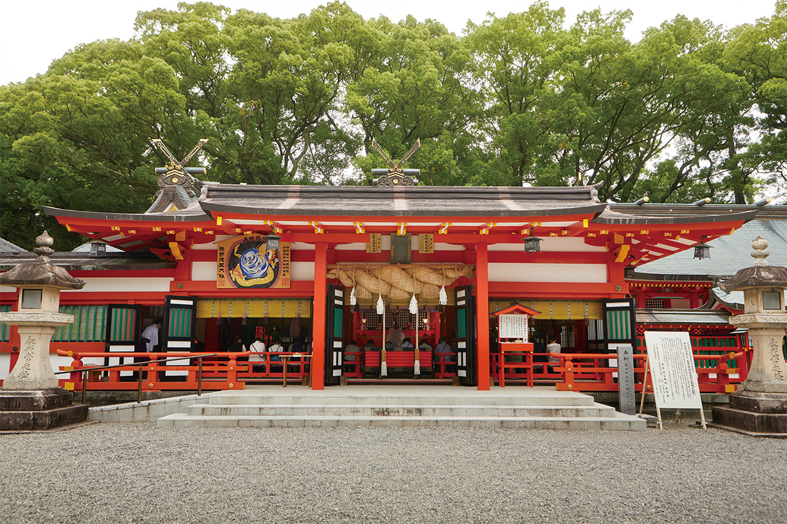
Паломничество в Кумано начали члены императорской семьи в эпоху Хэйан (794–1185). Позже за ними потянулись самураи и простые люди, и одно время паломников было столько, что их поток прозвали «муравьиным шествием в Кумано». Трудный путь через горы к «земле возрождения» называют истоком японской традиции путешествий, и сегодня по нему снова идут японцы и иностранцы.
Маршрут
С чего начинали паломники
К трём великим святилищам ведёт несколько дорог Кумано-кодо. Охэти тянется вдоль побережья от Танабэ, Кохэти связывает Кумано с горой Коя, Исэдзи идёт от святилища Исэ в префектуре Миэ, а Оминэ-окугакэмити соединяет Кумано с Ёсино, священным местом горных подвижников. Самая древняя из всех Накахэти: по ней раз за разом ходили члены императорской семьи. Все эти дороги сходятся у святилища Кумано Хонгу Тайся, первой цели паломника.
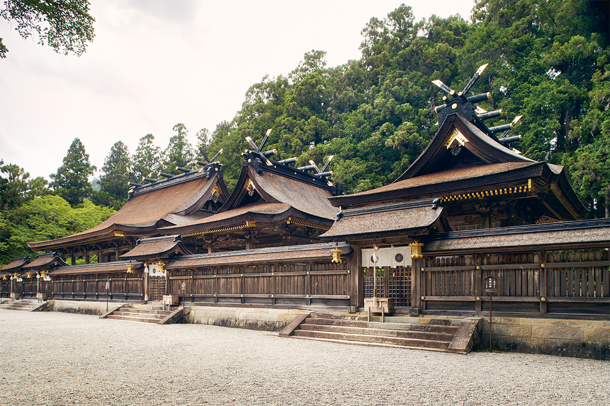
Мы начали путь там, где начиналась священная территория Хонгу: у Хоссинмон-одзи на тропе Накахэти. Одзи называют малые святилища, где почитают божественных детей богов Кумано. Хоссинмон относится к пяти самым почитаемым из них.
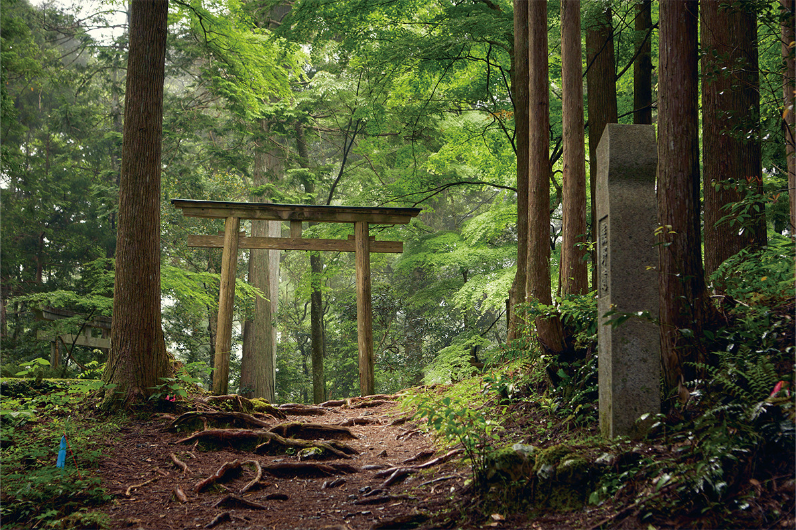
Тропа уходит в красивый лес. Мягкий свет пробивается сквозь листву на свежую зелень, звонко кричит кукушка. Чайные плантации и деревни сменяют друг друга, и чем дальше идёшь, тем легче забываешь о суете.
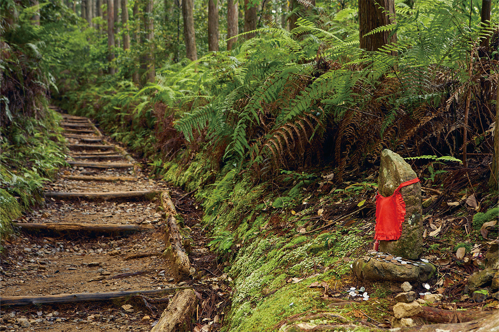
После места, где в эпоху Эдо стояли три чайных домика, мы свернули с тропы на смотровую площадку, и тут перехватило дыхание. Над бескрайним лесом Кумано возвышаются огромные ворота Оюнохары, старого места святилища Хонгу, а рядом течёт широкая река Кумано.
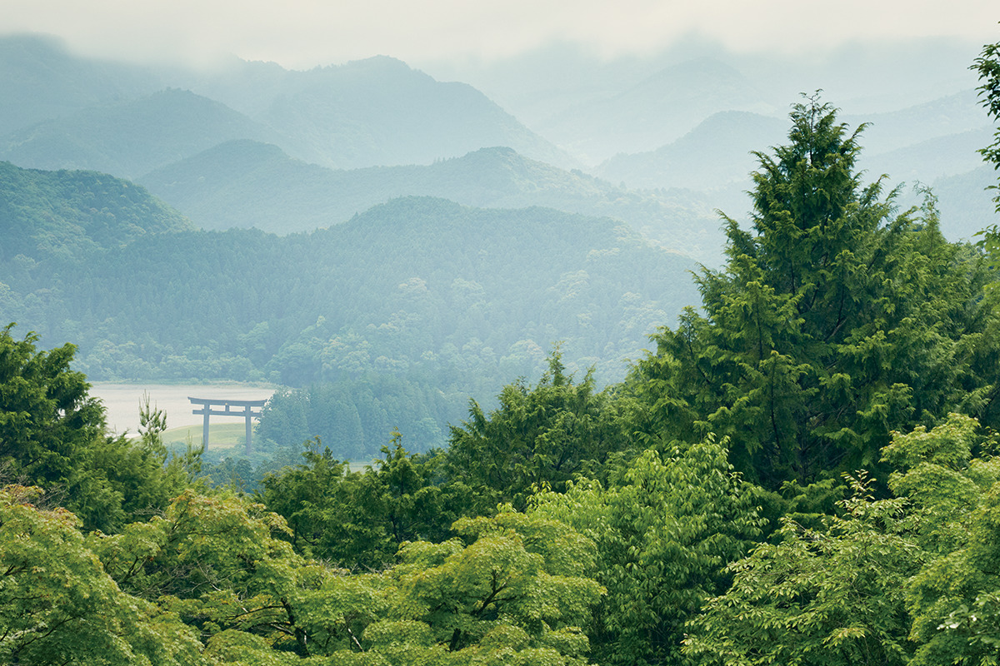
Тропа Накахэти уходит от Кии-Танабэ вглубь гор Кии. С эпохи Хэйан до эпохи Камакура бывшие императоры прошли по ней больше ста раз, и она считалась официальной дорогой паломничества. Обычно по ней обходили Кумано Хонгу Тайся, Кумано Хаятама Тайся и Кумано Нати Тайся.
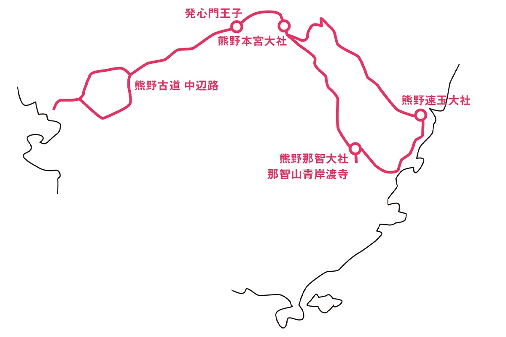
Святыни
Пять храмов и святилищ Кумано
Кумано Хонгу Тайся
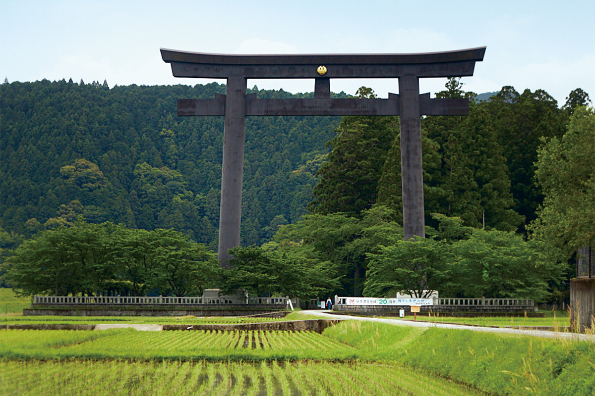
Примерно через три часа пути мы проходим через ворота святилища Кумано Хонгу Тайся. Строгие павильоны крыты корой кипариса. Пока мы молимся и думаем о путниках прошлых веков, священник святилища рассказывает:
«В эпоху Хэйан, когда началось паломничество в Кумано, на многие священные горы женщинам вход был закрыт. А боги Кумано принимали всех: и мужчин, и женщин, и знатных, и простых»
священник святилища Кумано Хонгу Тайся
Выходит, что открытость, о которой так много говорят сегодня, жила в Кумано уже больше тысячи лет назад.
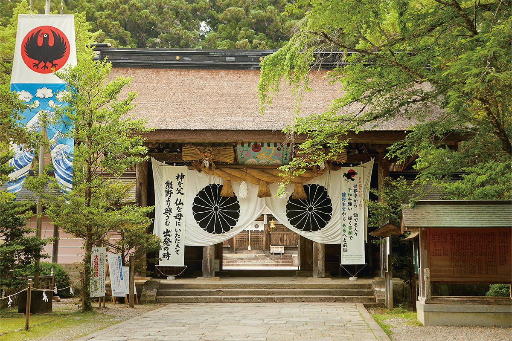
Кумано Хонгу Тайся
- Адрес
- префектура Вакаяма, Танабэ, Хонгу-тё Хонгу, 1110
- Телефон
- +81 735-42-0009
- Часы работы
- 7:00–17:00 (киоск с амулетами 8:00–17:00)
- Цены / Вход
- сокровищница, взрослые 300 иен, дети 100 иен
- Сайт
- hongutaisha.jp
Кумано Хаятама Тайся и святилище Камикура
От Хонгу мы едем в город Сингу вдоль реки Кумано. Саму реку тоже внесли в список Всемирного наследия как «речную дорогу паломников». Святилище Кумано Хаятама Тайся стоит недалеко от её устья. Перед роскошными киноварными павильонами, священным деревом наги и скалой Готобики, на которую, по преданию, спустились боги Кумано, остро чувствуешь силу природы, которая больше человеческого разума.
Святилище Камикура подчинено Хаятаме и стоит отдельно от него, на горе. Чтобы добраться до скалы Готобики, нужно подняться по 538 крутым каменным ступеням.
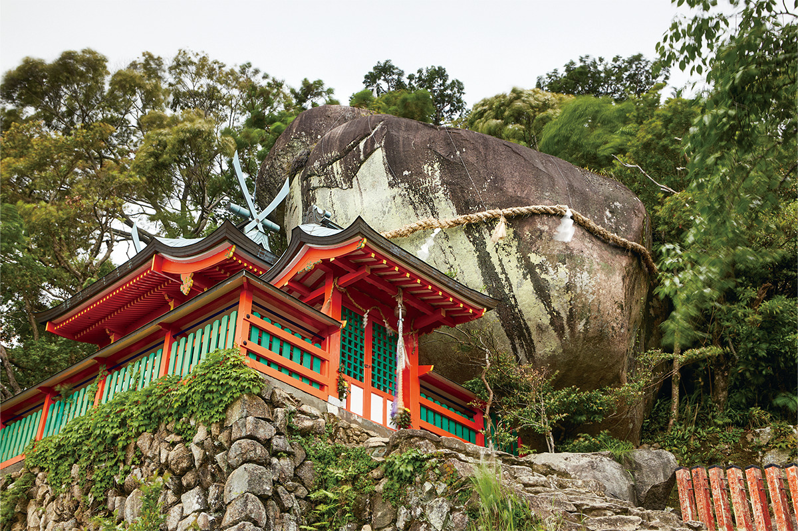
Кумано Хаятама Тайся
- Адрес
- префектура Вакаяма, Сингу, Сингу, 1
- Телефон
- +81 735-22-2533
- Часы работы
- от восхода до заката (киоск с амулетами 8:00–17:00)
- Цены / Вход
- сокровищница святилища 500 иен (школьники и младше бесплатно)
Святилище Камикура
- Адрес
- префектура Вакаяма, Сингу, Камикура, 1-13-8
- Телефон
- +81 735-22-2533 (Кумано Хаятама Тайся)
- Часы работы
- территория открыта всегда
- Цены / Вход
- бесплатно
Кумано Нати Тайся
Последняя цель паломника, идущего по Накахэти, святилище Кумано Нати Тайся на горе Нати. Яркие киноварные павильоны красиво смотрятся на фоне первобытного леса, а телом божества здесь считается водопад Нати, один из трёх самых знаменитых водопадов Японии. Вода, источник жизни, с грохотом падает с высоты 133 метров без остановки. Глядя на неё, невольно видишь в природе божество и чувствуешь, как прибавляется сил.
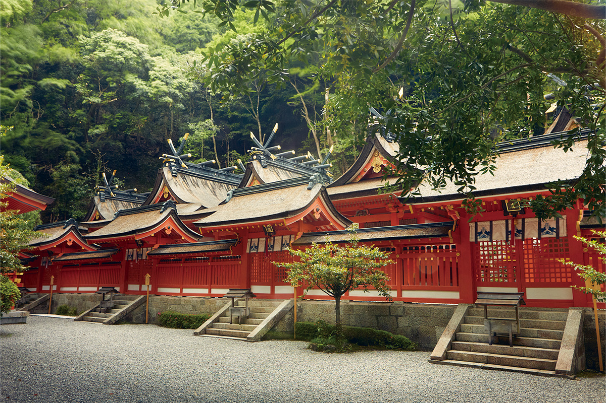
Каждый год 14 июля здесь проходит главный праздник святилища, «Нати-но оги-мацури». Он изображает возвращение богов домой и входит в число трёх великих огненных праздников Японии.
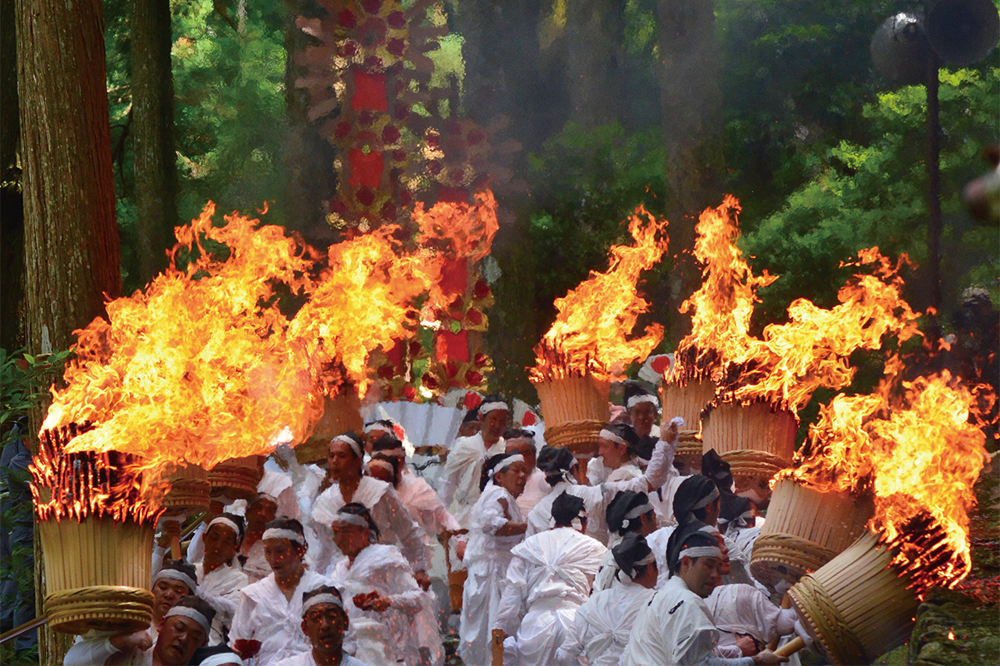
Кумано Нати Тайся
- Адрес
- префектура Вакаяма, уезд Хигаси-Муро, Нати-Кацуура, Натисан, 1
- Телефон
- +81 735-55-0321
- Часы работы
- 8:00–16:00
- Цены / Вход
- место поклонения у водопада Нати и сокровищница, взрослые 300 иен, школьники 200 иен
Храм Сэйгантодзи
Рядом со святилищем стоит храм Сэйгантодзи школы Тэндай с историей в 1300 лет. До разделения синтоизма и буддизма в эпоху Мэйдзи храм и святилище Нати были единым целым и вместе составляли большой центр горного подвижничества. Поэтому это место считали сердцевиной веры Кумано. Настоятель храма говорит так:
«Здесь сохранился исток японской веры, в которой боги природы и будды едины. Когда оказываешься здесь, находишь покой и утешение, а вместе с ними что-то новое в себе. В Кумано есть то, что не зависит от эпохи: причина, по которой человек вообще отправляется в путь»
настоятель храма Сэйгантодзи
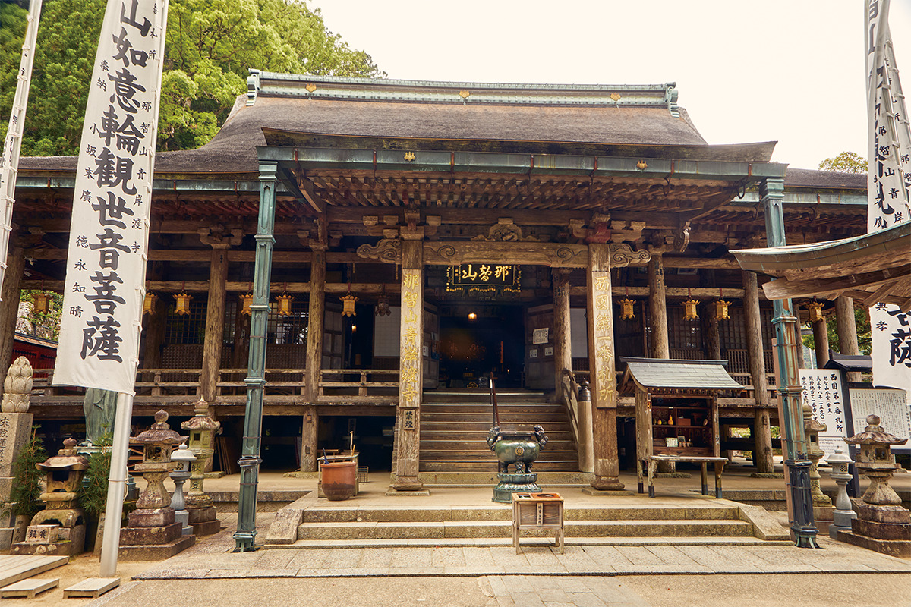
Хидэёси Тоётоми (1537–1598), восстановивший зал, объединил Японию в конце XVI века после столетия войн.
Из всех дорог Кумано-кодо лучше всего старый облик сохранился на склоне Даймондзака, который ведёт к святыням горы Нати.
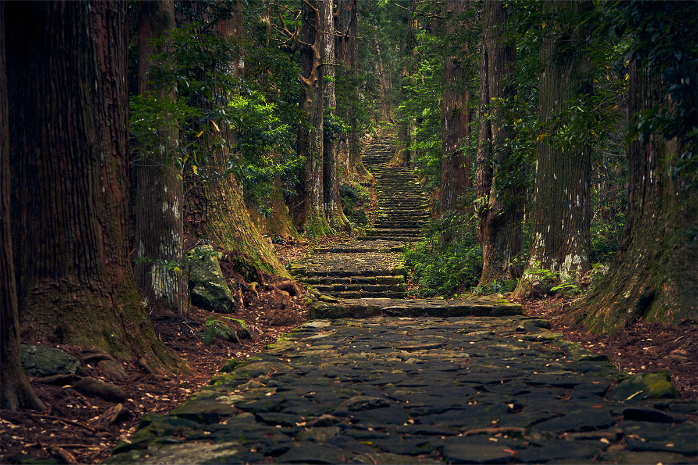
Храм Сэйгантодзи
- Адрес
- префектура Вакаяма, уезд Хигаси-Муро, Нати-Кацуура, Натисан, 8
- Телефон
- +81 735-55-0001
- Часы работы
- 7:00–16:30 (трёхъярусная пагода 8:30–16:00)
- Цены / Вход
- трёхъярусная пагода, взрослые 300 иен, дети 200 иен
- Сайт
- seigantoji.or.jp
Фото: Кэндзи Окадзаки.